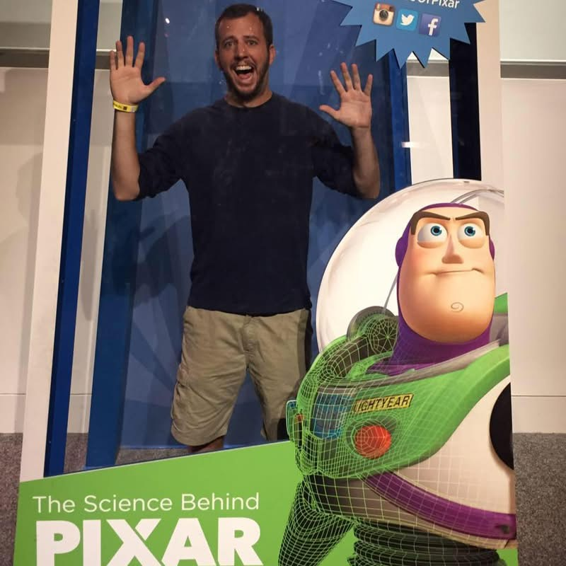
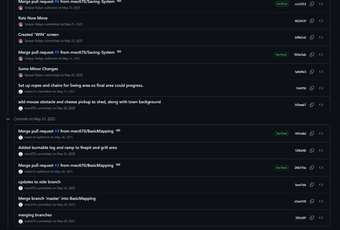
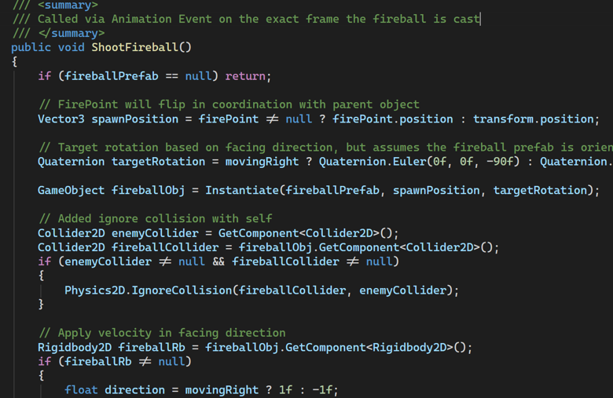

Hello, all! I'm Matthew Campbell (MWC) a New Jersey based level designer with interests in narrative and role-playing focused designs. My drive is to build levels where the player always has a clear motivation to progress forward, whether that is to reach an elusive target or see the consequences of a dialogue selection, there should always be something the player can strive towards. My B.S. in Game Programming and Design from Southern New Hampshire University (SNHU) has helped me to refine my process and incorporate a diverse skillset into my design strategies.

Why These Artifacts
One of the benefits from my time at SNHU was the ability to work on several projects, both as an individual, and as a member of a few small teams. There were multiple times when I had to advance my own skillset so I could move forward with a group task, and this developed a level of independence that allowed me to take on additional responsibilities with each new project. The artifacts included in my portfolio show how I have been able to grow in my understanding of level progressions over the years, and how I have been able to improve my previous efforts with this increased knowledge. Blend Out is a good example of how I took an early project with a crude understanding of layouts and asset placements and developed it into a more refined scene with a clear setting, tone, and sense of direction for the player. Drips of Time is a project that shows how I was able to go back to a single static template and introduce new enemy and environmental designs to make a more progressive experience without relying on textual prompts. Little View, which also features minimal text prompts, leans on exploration in a 3D environment without the typical enemies to fight, and shows how I have improved in scene construction via the enhancements to lighting and materials throughout the design. Lastly is Willville, another example of improving a visual elements, with this one occurring under stricter conditions, as I needed to generate a small 3D town inside of a WebGL build. With Willville, I was able to show how I implemented only the necessary amount of UI elements and text on the screen even when dialogue and text barks were a main focal point. Together, these projects show my ability to craft forward progressing level designs in a variety of ways, whether that is using Unity or Unreal, 2D or 3D environments, or verbal or nonverbal prompts for the player. As a level designer I need to be able to recognize when a player is able to understand the goal, what tools I have to guide the player to said goal, and whether the right amount of fun is incorporated to make it all worthwhile.
Professional Growth
My time spent in my Game Design and Programming courses has made me a better level crafter, but, more importantly, it has helped me to develop my skills as an efficient and independent learner. I have now compiled a litany of resources, from YouTube tutorials to specific GameDev courses, but I also have a better understanding of how and when to dive into the nuances of Unreal and Unity's game engine documentation. When I go to research a specific problem, I have a better idea of the outcome and process that I want to achieve rather than a vague understanding, and when I want to know more about current trends, I can go beyond the immediate AI prompting headlines to find discussions on things like real-time lighting and the rise of handheld gaming. Knowing how to do this has made it simpler for me to improve in areas like Unreal's AI movement scripts or Unity's environmental lighting controls, which was critical for my short iteration cycles during my final capstone. All this experience now makes me a better asset to a production team, as I am able to learn new skills at a quicker pace and, therefore, I can be utilized for more tasks within a shorter production time.
My Best Practices
Outside of any work I have done as an individual, SNHU has also helped me prepare for development that takes place in a shared workspace. When I was working in my small teams, we would utilize Discord and Trello to establish tasks, while maintaining an active GitHub repository for all merges. Below you can see a snippet of some of the original project merges for Little View

And here you can see code comments for the Efreet character I have made inside Drips of Time, even though this project code has only ever been visible to me:

My focus when working on the programming side of projects has been to keep things modular, well defined, and scalable as often as I can. For instance, when I was working on the scenic elements of Willville and its limitations as a WebGL build, I intentionally sought out low poly pieces that could be snapped together to help reduce the draw calls of the main scene after enabling the “draw instanced” option, in addition to reducing the overall texture resolutions. In designing Drips of Time, I was able to use the initial “Goober” enemy as a template from which I crafted the movement patterns for the Salamander and Efreet without having to start from scratch, leaning on the existing functions that still applied. I was grateful for my commented sections and well document code after each development iteration, especially when I was returning to something I had not worked on in several months or years, as a quick read over of the commented notes to see what the previous intention was would be all it would take for me to be able to jump right back in. Now I feel comfortable adjusting to the documentation preferences of any development team, which is a key aspect to making sure that my contributions can be easily integrated into others' workflows.
While I have highlighted the positive outcomes of my growth journey, many of these developments do not come without first pushing through challenges and adverse conditions. Throughout my time, I have had to work through difficulties like code merge conflicts, where sections of a project had to be fixed, or an update scaled back, so that we could bring in the completed work of another team member. I have had to learn how to incorporate 3rd party assets, because at times my current ability to create 3D models or materials has lagged too far behind the quality of the rest of the assets in a build, so I needed to learn how to manipulate others work and made sure I gave credit to those giving me this platform to build from. I have had to spend a good amount of time reading up on settings related to indirect lighting and casting shadows, but I also know that this is an area where I still have plenty more to learn so I can craft better scenes in future builds. Yet, despite all these hurdles and roadblocks, or more so because of these challenges, I have also been able to find creative solutions to get the results I wanted, or at least close enough that I could still feel confident moving forward.
My Ethical Designer Philosophy
In a field that can be saturated with so many ideas and creations, it is important to me that I always give credit when I use the work produced by someone else in my designs. For me, this means always having a credits page, even in an early draft of a project so that I do not lose track of the assets and artwork I have incorporated beyond my own. My philosophy also considers the audience for my creative works and asks me to have as wide of a lens as I can when thinking of topics I can either include or exclude. When I am writing a dialogue response or thinking about what kind of NPCs will populate a small town, I want to make sure I am being inclusive and understanding of the fact that many different types of people may try to play my game, and I want to give everyone a chance to have as enjoyable an experience as I am able to create. When I work on a team, I always try to be mindful of other team members' boundaries, their own communication needs, and my desire for all members to equally share in bringing a collective concept to life. Of course, one of the major questions now entering this space is the utilization of AI in game production, and how that impacts the work being done.
AI in the Future Game Market
One of the main concerns for those like me who are looking to break into the game development field is the rise of agentic AI tools and how it impacts the development cycle. There is undoubtably growing usage, and while impact is large on the coding side of development, it is something that is also becoming more of a factor on the artistic side as well. As a level designer this means that it is an unavoidable topic and one that I have had to grapple with over the past couple of years. My experience so far has been to avoid the tools whenever possible so that I can develop my foundational skills and have a stronger framework to pull from down the road. That said, I know it is a growing expectation to incorporate these elements into general workflows, so I do plan to continue my education in the mechanisms behind AI productions and, what I find to maybe of particular importance to my interest in level design, procedural generation. I believe with the increasing processing power of CPUs and real time rendering capabilities of GPUs that level designs will be expected to contain an increasing number of assets and features, which is where I believe procedural knowledge will come in handy for designing settings that can meet these demands. My personal conflict comes from the generative side of AI and where it sources its creations, so I will continue to defer to parties that hand craft resources to supplement my own creations when I need outside resources. All of this is to say, I know that AI usage is a very divisive topic for the gaming community, so as much as I can rely on my own ability to create, I will try to do so.
My Future Ambition
My journey so far has been with the intention of building my skills as a designer so that I can offer my talents to small teams in need of assistance in bringing the vision of their games to a playable reality. Having already worked independently and with small groups, inside of academic settings and as part of personal projects, I have been able to mature into a more conscious developer that has grown from direct feedback from professors and play testers alike. My experiences have brought me to a more refined understanding of what it takes to build with the player's experience in mind, and how ideas need to be shaped into something people want to interact with. I will continue to build my passion projects to share with the gaming community, but I also hope for the opportunity to bring other's creations to life as well.